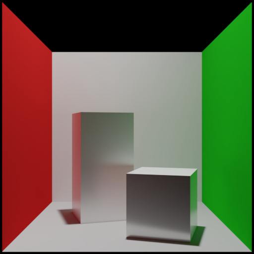

学习 Transformer 如何表示场景、建立注意力关系，并从参考渲染中学习生成 HDR 图像。
输入表示、注意力、两阶段网络与监督学习。
官方 Cornell Box 基线，以及相机、光源的边界测试。
几何、材质、相机、GI 与颜色处理的检查要求。
先核对同一场景的 Cycles 参考与预训练模型预测，再开展受限场景族的训练。原生 Sponza 用于检查复杂场景的输入能力与局限。
新一轮参考图尚待验收，正式训练未开始。
